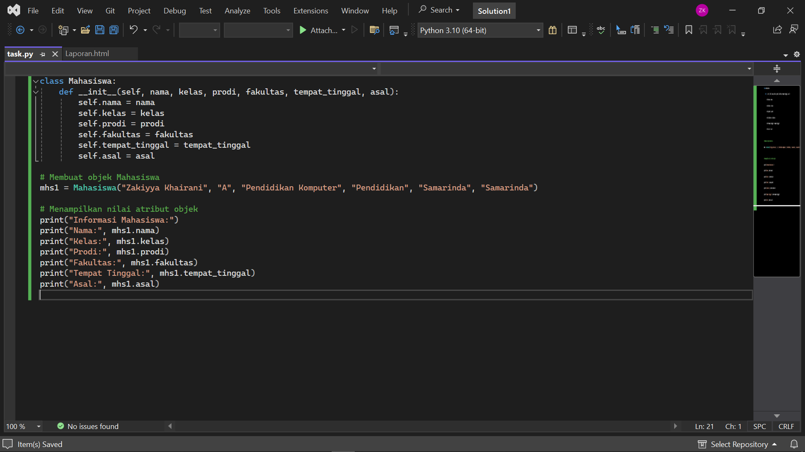

2. Mengerjakan Task.py
output :

Penjelasan nomor 2,
Setiap objek dari kelas Mahasiswa akan memiliki atribut-atribut seperti nama, kelas, prodi, fakultas, tempat_tinggal, dan asal. __init__(self, nama, kelas, prodi, fakultas, tempat_tinggal, asal): Metode konstruktor yang digunakan untuk inisialisasi objek Mahasiswa dengan nilai-nilai awal yang diterima sebagai parameter.
self.nama, self.kelas, self.prodi, self.fakultas, self.tempat_tinggal, self.asal: Atribut-atribut dari objek Mahasiswa yang akan diinisialisasi dengan nilai-nilai yang diterima dari parameter konstruktor. Membuat objek mhs1 dari kelas Mahasiswa dengan memberikan nilai-nilai spesifik untuk setiap atribut. Menampilkan informasi mahasiswa dengan mencetak nilai-nilai atribut dari objek mhs1. Hasil output program akan menampilkan informasi seperti nama, kelas, program studi, fakultas, tempat tinggal, dan asal mahasiswa yang telah diinisialisasi sebelumnya.